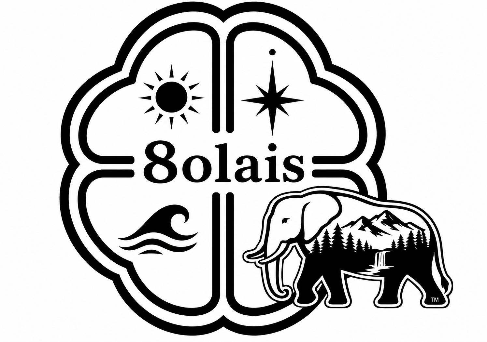

Where Every Decision Matters8olais — 経営判断の伴走支援
「この契約、押してよいか」「この人を採るべきか」—— そういう判断を、一緒に考えるパートナーがいますか？
For Who
What We Do
クライアントへの6つの約束
Background
フランチャイズの現場で15店舗を業界第二位278店舗へと成長させ、加盟店撤退率0%・経常利益654%改善を実現。代表取締役として事業再生にも携わり、本部側・加盟店側の両方の論理を身体で知っています。
大手コンサルが来ない規模の経営者こそ、判断の伴走者を必要としている。その確信から、8olaisを立ち上げました。
答えを渡すのではなく、経営者自身が判断できる状態をつくる。それが8olaisの役割です。
Plan
Philosophy
ANTHROPOGENICとは、人為的介入による変容と喪失のことです。コントロールが行き過ぎれば現場の自律は死ぬ。管理が足りなければ組織は崩れる。ゾウの輪郭に山・森・滝を内包したロゴは、生命体の自律的な生態系と人間の設計圧力が共存する姿を描いています。枠をはみ出すゾウは、既存の秩序を超えていく生命力の象徴です。
FAQ
Contact
初回相談は無料です。業種・規模は問いません。
「判断に迷っている」その状態から、一緒に整理します。
tmo8y.office@gmail.com